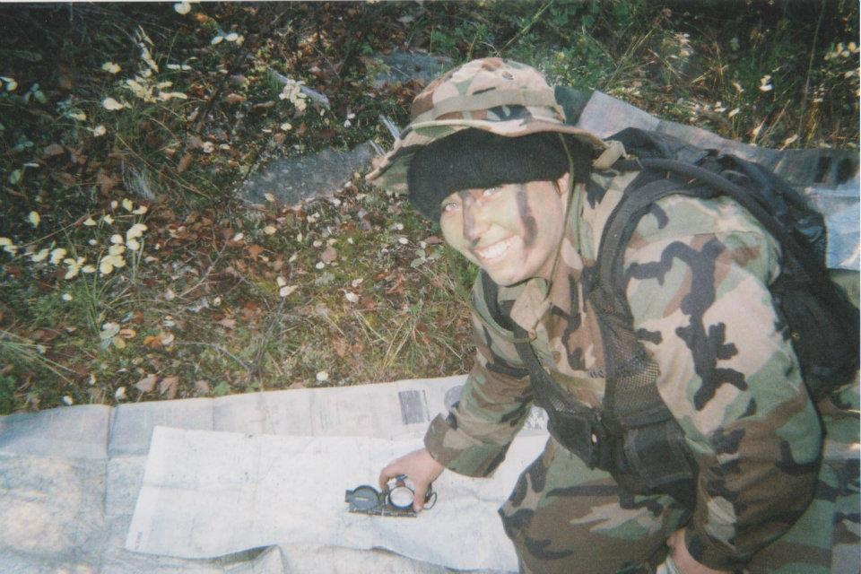
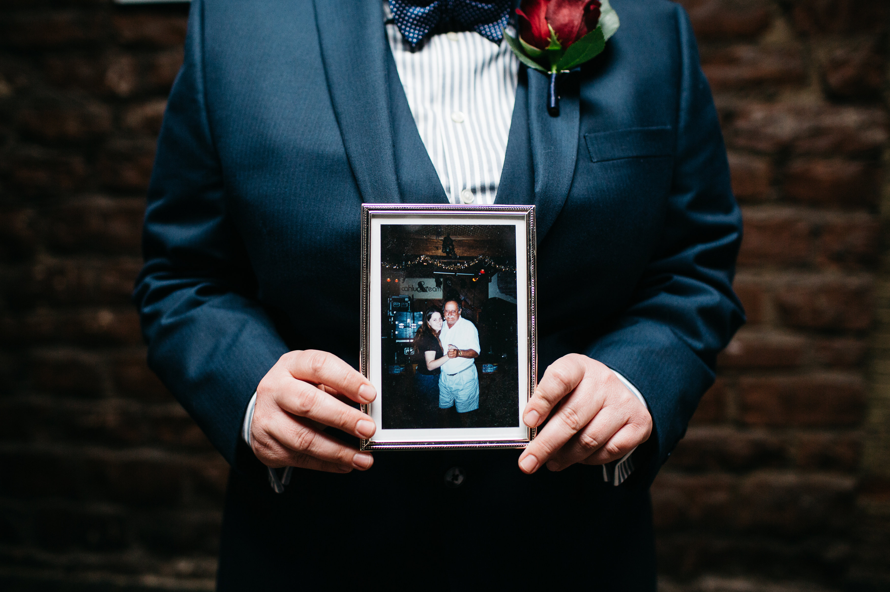

1 / 5
2 / 5

3 / 5
4 / 5
5 / 5

Jen King, a Sr. Engineer at Assured Information Security, is an innovative leader in her field. Jen, as a veteran of the Iraq and Afghanistan wars understands what it means to face up to a challenge amidst hardship. She strives to leave a lasting impact on women in Tech and LGBTQIA in technology through her work with affinity groups and charitable organizations. After serving in the United States Air Force as a Spanish Airborne Linguist, she utilized those skills to propel her into a career as a successful programmer. After over a decade dedicated to her field Jen has become an expert in Java, Python, php, HTML, JavaScript, bash shell scripting. Jen has an Associates in Applied Science Communications Applications Technology, an Associates of Arts in Spanish, a Bachelor’s of Science in Systems & Network Administration, a Master’s of Science in Computer Information Systems, and a Master’s of Science in Cybersecurity. A lifelong achiever, she is currently preparing to begin her PhD program. An avid world traveler she has visited seven countries and at least thirty-two states in her quest to see the world. Jen does her best to absorb the cultures and utilize them as inspiration for her work and personal life. She loves hiking and experiencing nature having hiked in at least ten of those states and three of the countries she has visited. When she isn’t hiking Jen is either creating or experiencing art. An amateur sketch artist she enjoys drawing still life and characters. And when she isn’t creating she is experiencing art first hand through the local museums.